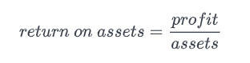
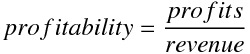

Jargon-free, no technical background assumed. Come enjoy this exploration journey with me! :D
The Forbes Global 2000 is an annual ranking of the top 2,000 public companies in the world based on a mix of four metrics: sales, profit, assets and market value. Methodology can be viewed here.
Python, Pandas, Numpy, and Matplotlib.
There are 5 interesting questions that I wish to explore to satisfy my curiosity:
You can download the dataset here (original or what we will be using).
I hope you are excited about this exploration like I do, let's begin!
Let's first import pandas and then read in the csv file
import pandas as pd
forbes = pd.read_csv("forbes2000_2018.csv")
print(forbes["country"].value_counts().head())
First, we save all the rows that have "United States" as a value in the column "country" into a variable called "usa".
usa = forbes.loc[forbes["country"] == "United States"]
print(usa["state"].value_counts().head(10))
Let's first see how many unique industries there are in the dataset.
print(forbes["industry"].unique().count)
import matplotlib.pyplot as plt
labels = forbes["industry"].value_counts().index.tolist() # ordered from most to least frequent
sizes = forbes["industry"].value_counts().tolist() # sizes in % unit
explode = [0.1] # explode only the biggest slice, 0.1 to explode, 0 for the non-explodes
for i in range (len(labels)-1):
explode.append(0)
fig1, ax1 = plt.subplots()
ax1.pie(sizes, explode=explode, labels=labels, autopct='%1.1f%%', startangle=90)
ax1.axis('equal') # ensures that pie is drawn as a circle
plt.show()
This one is also easy. Let's first define ROA.
ROA, stands for "return on assets", simply put, is a ratio that tells how well a company can generate profits with the amount of assets it has.

To begin with, we save all the rows that represent US companies that are in the "Software & Programming" industry into "usa_software".
usa_software = forbes.loc[ ((forbes["country"] == "United States") & (forbes["industry"] == "Software & Programming")) ]
usa_software["roa"] = forbes["profits"] / forbes["assets"]
print(usa_software.sort_values(by=["roa"], ascending=False).head())
ROA is about generating profits out of available assets.
Profitability, on the other hand, is about how efficient a company makes its money.
Having known that profits is revenue that remains after expenses...

Like in the previous exploration. We simply calculate the profitabilities, sort in descending order and take the top 5 rows.
forbes["profitability"] = forbes["profits"] / forbes["revenue"]
print(forbes.sort_values(by=["profitability"], ascending=False).head())
The End.
I hope you enjoyed the reading. <3